▲ 충전기 출력(kW)에 따라 같은 주차장에서도 단가가 달라진다 ⓒ Immanuelle / Wikimedia Commons (CC BY 4.0)
"급속 391원, 완속 295원, 구독하면 295원." 숫자는 쉽게 외워지지만, 정작 내 연간 충전비가 얼마인지는 아무도 알려주지 않는다. 같은 3,000km를 타도 어디서, 어떤 요금제로 충전하느냐에 따라 한 해 충전비가 수십만 원 갈린다.
이 기사는 8월 요금 개편 내용을 다시 정리하지 않는다(그건 8월 전기차 충전 요금 개편 총정리, 충전 요금제 완전정리에 있다). 대신 전기차 충전요금이 어떤 단가로 쌓이는지 구조를 해부하고, 월 주행거리별 연간 충전비를 직접 계산한 뒤, 구독제가 월 몇 kWh부터 이득인지 손익분기를 계산했다. 요금 기준일은 2026년 10월 2일이다.
1. 충전요금은 어떻게 쌓이나 — 5단계 공공요금부터
공공 충전요금은 기후에너지환경부가 8월 1일부터 충전기 출력 기준 5단계로 세분화했다. 기존에는 완속·급속 2단계였다. 완속(30kW 미만) 충전기가 전체의 약 90%를 차지하고, 200kW 이상 초급속은 약 2.3%다.
▲ 실내 주차장에 늘어선 전기차 충전기. 같은 주차장이라도 충전기 출력에 따라 단가가 달라진다 ⓒ Immanuelle / Wikimedia Commons (CC BY 4.0)
| 충전기 출력 | 개편 후 단가 | 비고 |
|---|---|---|
| 30kW 미만 (완속) | 295.0원 | 기존 324.4원 대비 29.4원(약 9.1%) 인하 |
| 30~50kW | 307.2원 | 중속 |
| 50~100kW | 325.6원 | 급속 |
| 100~200kW | 348.4원 | 급속 |
| 200kW 이상 (초급속) | 393.1원 | 약 13.2% 인상 |
핵심은 "급속이냐 완속이냐"가 아니라 "몇 kW 충전기냐"가 요금을 정한다는 점이다. 같은 급속이라도 50~100kW와 200kW 이상은 kWh당 67.5원 차이가 난다. 내 차의 최대 충전 속도가 150kW인데 200kW급 충전기를 고집할 이유가 없다는 뜻이다. 충전기 앞에 적힌 출력(kW) 표시를 먼저 확인하는 습관이 단가를 바꾼다.
📍 민간 사업자는 "회원가"와 "비회원가"가 따로 있다
SK일렉링크는 비구독 회원의 기본 급속충전 요금을 kWh당 391원으로 공개하고 있다. 환경부 100~200kW 급속(348.4원)보다 42.6원 비싸고 200kW 이상(393.1원)과 거의 같다. 구독제는 이 391원을 "정가"로 놓고 할인하는 구조라서, 구독 이득은 어디와 비교하느냐에 따라 달라진다. 그 계산은 4장에서 한다. (SK 구독 4종 요금과 비구독 391원은 2026년 10월 2일 SK일렉링크 공식 구독 페이지에서 재확인했다.)
5단계 단가가 적용되는 범위: 기후에너지환경부와 정책뉴스에 따르면 구간은 충전기의 정격출력 기준이며, 새 단가는 환경부가 설치·운영하는 공공 충전기와 협약을 맺은 민간 충전기에서 환경부 멤버십 카드로 결제할 때 적용된다. 민간 사업자의 자체 회원가는 별개다. 8월 인하 보도(오토트리뷴)에서 완속은 플러그링크 292원, GS차지비 등 295원으로 정리됐지만, GS차지비·에버온·대영채비의 8월 이후 급속 회원가는 공식 요금표로 확인하지 못해 비교 표에는 넣지 않았다. 사업자별 앱의 요금 안내를 직접 확인하자.
2. 계산의 전제 — 전비·충전량 가정
연간 충전비를 계산하려면 가정이 필요하다. 아래 가정은 이 기사의 모든 표에 동일하게 적용했다.
| 항목 | 가정값 | 근거·비고 |
|---|---|---|
| 충전기 청구 기준 전비 | 4.5km/kWh | 배터리 기준 실주행 전비 5.0km/kWh에 충전 손실 약 10%를 반영한 카프리즘 가정. 차종·계절에 따라 달라짐 |
| 월 주행거리 | 1,000 / 1,500 / 2,000 / 3,000km | 월 충전량 약 222 / 333 / 444 / 667kWh |
| 단가 | 부가세 포함 표시단가 그대로 | 8월 1일 시행 공공요금, SK일렉링크 공개 요금 |
| 제외 항목 | 카드 할인·포인트·주차요금·시간대 할인 | 변수가 많아 별도 언급 |
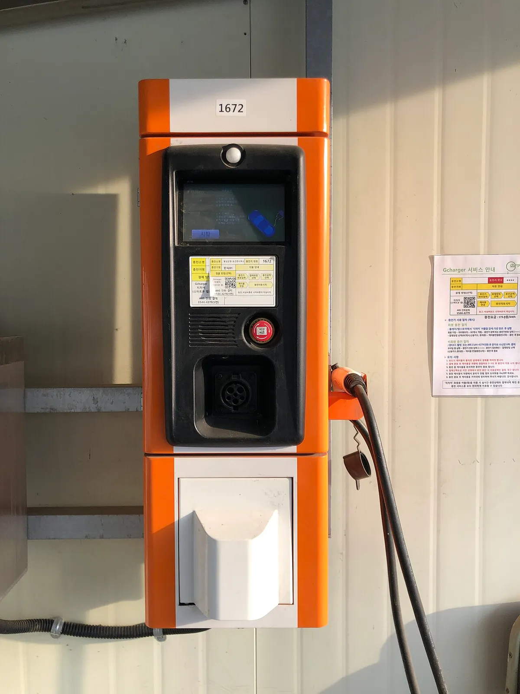
▲ 건물 벽면에 설치된 벽부형 완속 충전기. 완속은 공공요금에서 가장 저렴한 295원 구간이다 ⓒ Choi Kwang-mo / Wikimedia Commons (CC0)
✅ 계산식
· 월 충전량(kWh) = 월 주행거리 ÷ 4.5
· 월 충전비 = 월 충전량 × kWh당 단가 (구독은 + 월 구독료)
· 연간 충전비 = 월 충전비 × 12
· 내 차의 전비가 4.0km/kWh라면 모든 금액에 ×1.125, 5.0km/kWh라면 ×0.9를 곱하면 된다
3. 월 주행거리별 연간 충전비 계산표
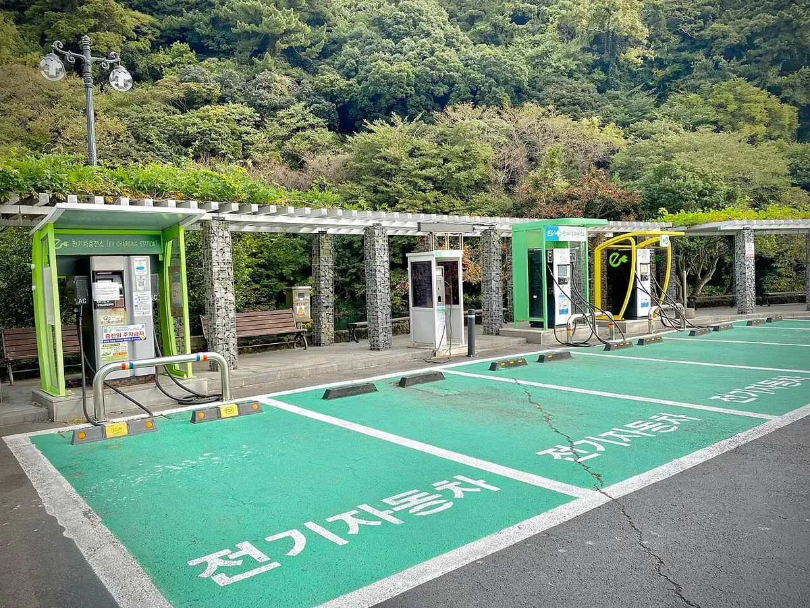
▲ 숲과 맞닿은 공원형 충전소. 충전 장소가 어디든 청구 기준은 충전기 출력과 사업자 요금이다 ⓒ Sharon Hahn Darlin / Wikimedia Commons (CC BY 2.0)
| 충전 방식 (kWh당) | 월 1,000km | 월 1,500km | 월 2,000km | 월 3,000km |
|---|---|---|---|---|
| 공공 완속 30kW 미만 (295.0원) | 약 78.7만 | 약 118만 | 약 157만 | 약 236만 |
| 공공 50~100kW (325.6원) | 약 86.8만 | 약 130만 | 약 174만 | 약 261만 |
| 공공 100~200kW (348.4원) | 약 92.9만 | 약 139만 | 약 186만 | 약 279만 |
| 공공 200kW 이상 (393.1원) | 약 104.8만 | 약 157만 | 약 210만 | 약 314만 |
| SK일렉링크 비구독 (391원) | 약 104.3만 | 약 156만 | 약 209만 | 약 313만 |
월 1,500km를 타는 운전자는 완속만 쓰면 연 약 118만 원, 초급속만 쓰면 약 157만 원으로 연 39만 원 차이가 난다. 월 3,000km를 타는 장거리 운전자는 같은 비교에서 연 약 78만 원 격차다. 다만 현실에서는 완속과 급속을 섞어 쓰므로, 아래 혼합 시나리오를 함께 보자.
| 유형 | 충전 비중 가정 | 연간 충전비 |
|---|---|---|
| 아파트 완속 위주 | 완속 80% + 100~200kW 급속 20% | 약 122만 원 |
| 도심 급속 위주 | 100~200kW 급속 100% | 약 139만 원 |
| 장거리 고속도로 위주 | 200kW 이상 초급속 60% + 100~200kW 급속 40% | 약 150만 원 |
같은 거리를 타고도 유형에 따라 연 약 28만 원 차이가 난다(아파트 완속 위주 vs 장거리 초급속 위주). 충전비를 줄이는 가장 큰 레버는 요금제 가입이 아니라 충전기 출력 선택이다.
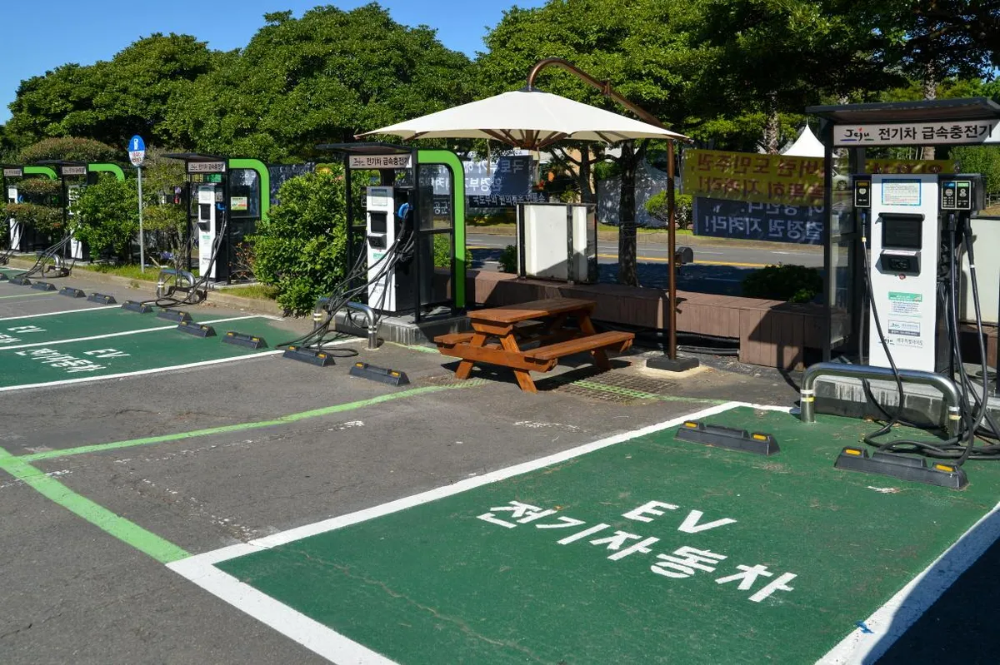
▲ 야외 전기차 충전소(제주, 2019년 촬영). 가을 주말 낮에는 공공 급속 요금이 할인된다 ⓒ 대한민국역사박물관 현대사아카이브(공공누리 제1유형) / Wikimedia Commons
📍 가을 주말 낮 할인은 지금(10월 31일까지)만
9월 5일~10월 31일 주말·공휴일 오전 11시~오후 2시에는 공공 급속충전기 요금이 kWh당 85.4~97.2원(약 22~32%) 감면되고, 민간 19개사도 할인·포인트 혜택을 제공한다. 민간은 해당 사업자 회원 앱·카드로 결제하고 충전을 11시 이후 시작해야 적용된다. 시기 한정 할인이므로 위 연간표(연간 충전비 비교)에는 이 감면분이 반영되어 있지 않다.
근거: 기후에너지환경부가 9월 3일 발표한 보도자료를 다룬 뉴스핌 보도와 한국경제 보도다. 한국전력 운영 충전기는 11~17%(40.1~48.6원) 감면으로 별도이고, 참여 민간 사업자 수는 보도에 따라 표기가 달라(15~19개사) 정확한 사업자·할인 방식은 각 앱에서 확인해야 한다. 정부는 이번 결과를 분석해 2027년 계절·시간대별 요금체계를 설계할 계획이다.
4. 구독제 손익분기 — 월 몇 kWh부터 이득일까
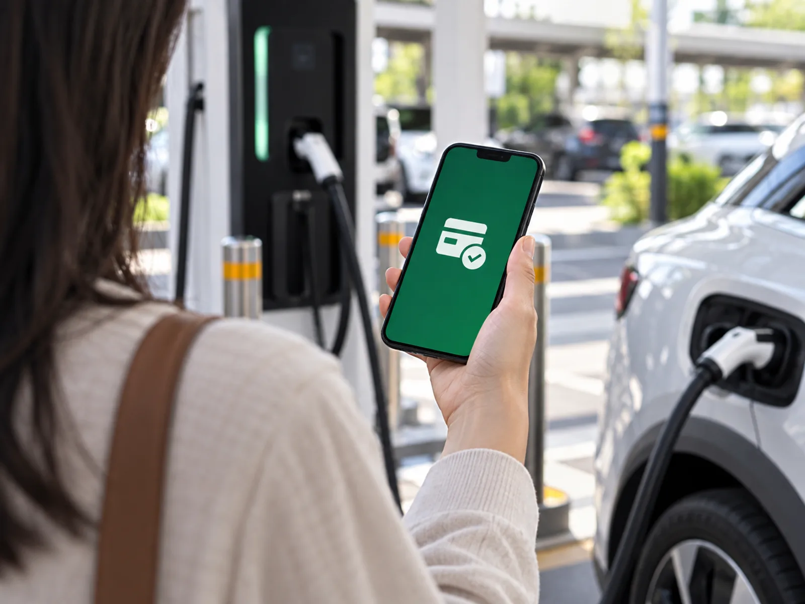
▲ 충전 앱으로 결제하는 장면을 그린 예시 이미지. 구독제는 이런 앱 결제 요금을 월 정액으로 바꾸는 방식이다 ⓒ CarPrism (AI 생성 이미지)
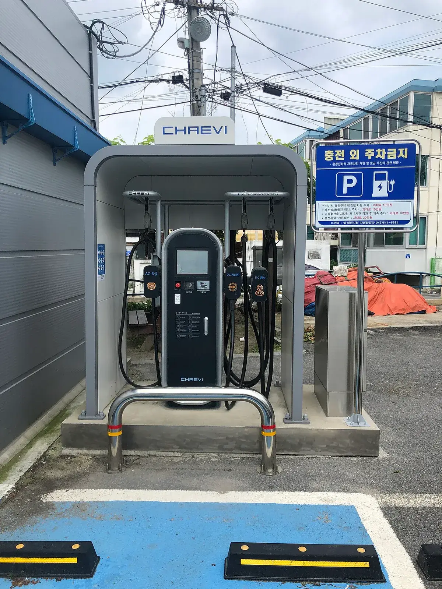
▲ 급속충전기 앞에서 확인할 것은 출력(kW)과 내 사업자 회원 여부다 ⓒ Choi Kwang-mo / Wikimedia Commons (CC0)
SK일렉링크의 급속충전 구독 요금제는 3월 신규 3종 출시로 총 4종이 됐다. 아래는 공식 구독 안내 페이지 기준이다(급속충전 한정, 미사용 약정량은 이월 불가).
| 요금제 | 월 구독료 | 약정 충전량 | 급속 단가 |
|---|---|---|---|
| 스타터 | 900원 | 50kWh | 315원 |
| 베이직 | 3,900원 | 150kWh | 305원 |
| 프로 | 8,900원 | 300kWh | 300원 |
| 마스터 | 19,900원 | 무제한 | 295원 |
손익분기는 월 구독료 ÷ (비교 단가 − 구독 단가)로 계산한다. 비교 대상을 두 가지로 놓았다. 하나는 SK 비구독 391원, 다른 하나는 충전소만 맞으면 대신 쓸 수 있는 환경부 100~200kW 급속 348.4원이다.
| 요금제 | vs 비구독 391원 | vs 환경부 348.4원 |
|---|---|---|
| 스타터 | 월 12kWh부터 | 월 27kWh부터 (약정 50kWh 이내) |
| 베이직 | 월 45kWh부터 | 월 90kWh부터 |
| 프로 | 월 98kWh부터 | 월 184kWh부터 |
| 마스터 | 월 207kWh부터 | 월 373kWh부터 |
여기에 월 충전량별로 어떤 요금제가 가장 싼지를 계산해 보았다. 약정 초과분은 391원이 적용된다고 가정했다(초과 단가는 공식 페이지에서 확인하지 못해 카프리즘이 놓은 가정이다).
| 월 충전량 | 비구독 | 스타터 | 베이직 | 프로 | 마스터 | 최저 |
|---|---|---|---|---|---|---|
| 50kWh | 19,550 | 16,650 | 19,150 | 23,900 | 34,650 | 스타터 |
| 100kWh | 39,100 | 36,200 | 34,400 | 38,900 | 49,400 | 베이직 |
| 200kWh | 78,200 | 75,300 | 69,200 | 68,900 | 78,900 | 프로 |
| 300kWh | 117,300 | 114,400 | 108,300 | 98,900 | 108,400 | 프로 |
| 400kWh | 156,400 | 153,500 | 147,400 | 138,000 | 137,900 | 마스터(프로와 거의 동일) |
| 667kWh | 260,797 | 257,897 | 251,797 | 242,397 | 216,665 | 마스터 |
✅ 구독제 판단 3줄
· 월 급속 충전량 100kWh 미만(월 약 450km): 스타터면 충분하고, 구독 이득도 월 수천 원 수준
· 월 100~300kWh(월 약 450~1,350km 급속 주행): 베이직·프로가 최적
· 월 400kWh 이상(월 약 1,800km 이상 급속): 마스터가 유리하나, 환경부 급속이 가까우면 마스터의 실익은 월 373kWh 아래에서 사라진다
5. 기아 그린패스, 계산해 보면
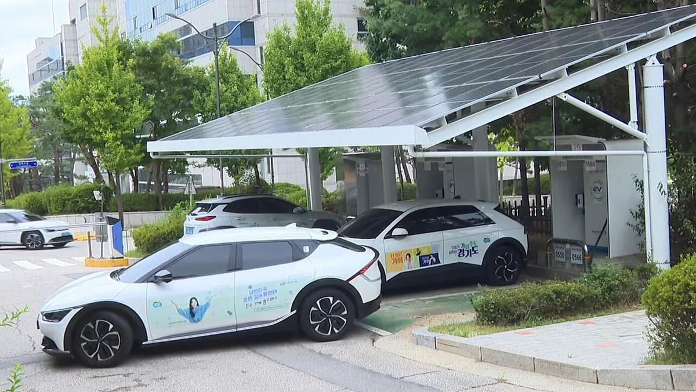
▲ 태양광 캐노피가 설치된 도심 충전소. 주행거리가 긴 영업용 차량일수록 구독제 효과가 크다 ⓒ GTV경기도청방송국 / Wikimedia Commons (CC BY 3.0)
기아 그린패스는 기아 EV 오너용 구독형 충전 요금제로, SK일렉링크 급속충전소에서 kWh당 96원(약 25%) 할인이 적용된다. 요금제는 3종이며, 월 약정량을 넘으면 정상요금(회원가)이 적용된다.
| 요금제 | 월 요금 | 월 약정량 | vs 정상가 손익분기 | 약정량 소진 시 월 절감액 |
|---|---|---|---|---|
| 미니 | 6,900원 | 200kWh | 월 72kWh | 약 12,300원 |
| 라이트 | 10,000원 | 400kWh | 월 104kWh | 약 28,400원 |
| 그린+ | 20,000원 | 1,400kWh | 월 208kWh | 약 114,400원 |
계산식은 손익분기 = 월 요금 ÷ 96원, 절감액 = 약정량 × 96원 − 월 요금이다. 정상요금(회원가)을 391원으로 보면 할인 후 단가는 약 295원이고, 월 요금까지 약정량 전부 소진했을 때의 실효 단가는 미니 약 330원, 라이트 약 320원, 그린+ 약 309원이다. 그린+ 최대 절감액은 산술상 1,400kWh × 96원 − 20,000원 = 114,400원이며, 기아 안내의 114,000원은 반올림 표기로 보인다. 단, 정상 회원가가 391원이라는 것은 카프리즘의 추정이며(96원이 약 25%라는 표기에서 역산), 실제 적용 단가는 기아 안내 페이지에서 직접 확인해야 한다.
📍 구독이 손해가 되는 순간
· 약정량을 채우지 못해도 월 요금은 그대로 나간다(이월 불가).
· 구독 할인은 해당 사업자 급속충전기에서만 적용된다. 내가 다니는 길에 그 사업자 충전기가 없으면 소용이 없다.
· 집·회사 완속 위주 운전자는 구독료만 더 낸다. 295원 완속은 이미 마스터 급속 단가와 같다.
6. 집 충전은 정말 가장 쌀까 — 누진제의 함정
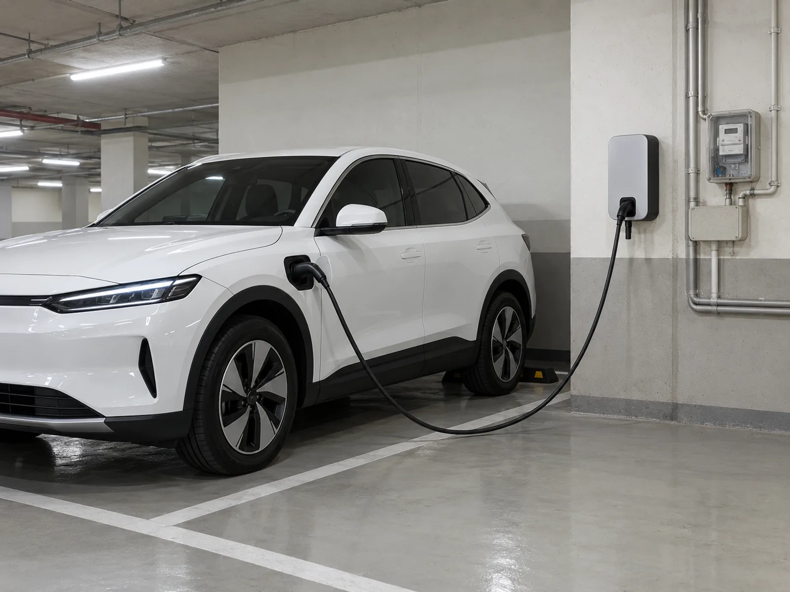
▲ 집·단지 완속 충전을 그린 예시 이미지. 충전전력은 옆 계량기로 계량돼 전기요금에 합산된다 ⓒ CarPrism (AI 생성 이미지)
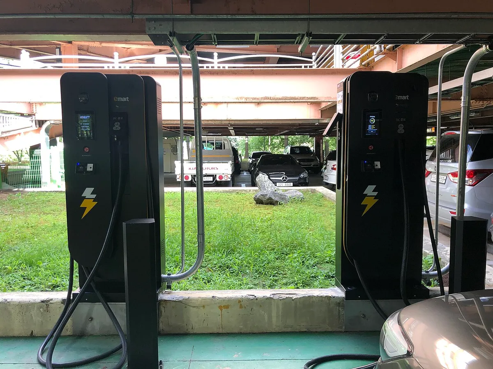
▲ 건물 주차장에 설치된 충전기 (사업자와 요금은 장소마다 다르다) ⓒ Choi Kwang-mo / Wikimedia Commons (CC0)
단독·다세대 주택에서 집 계량기로 충전하면 충전전력이 주택용 누진제에 합산된다. 2026년 4분기 전기요금은 동결(연료비조정단가 kWh당 +5원 유지)됐고, 주택용 저압 요금은 기타계절 기준 200kWh 이하 120원, 201~400kWh 214.6원, 400kWh 초과 307.3원이다(기본요금 910원·1,600원·7,300원).
여기에 기후환경요금(kWh당 9.0원: 2025년 9.0원 확정 이후 4분기 전기요금 동결 때 "기본요금·전력량요금·기후환경요금 모두 변동 없음"이 보도돼 유지된 것으로 판단. 한전 요금표 페이지에서 단가 자체는 직접 확인하지 못했으니 고지서로 재확인)과 연료비조정단가 5원, 전력산업기반기금 3.7%, 부가세 10%를 얹어 충전 때문에 늘어난 월 전기요금을 계산했다.
| 기존 월 사용량 | 충전량 222kWh (월 1,000km) | 충전량 333kWh (월 1,500km) | 충전량 667kWh (월 3,000km) |
|---|---|---|---|
| 150kWh | 월 약 5.3만원 (kWh당 239원) | 월 약 9.7만원 (292원) | 월 약 21.9만원 (329원) |
| 250kWh | 월 약 7.2만원 (323원) | 월 약 11.2만원 (337원) | 월 약 23.4만원 (351원) |
| 350kWh | 월 약 8.2만원 (371원) | 월 약 12.3만원 (369원) | 월 약 24.5만원 (367원) |
결과가 의외다. 기존 사용량이 월 250kWh인 집에서 월 1,500km를 충전하면 추가 단가가 kWh당 약 337원으로 공공 완속(295원)보다 비싸고, 350kWh인 집은 약 369원으로 공공 급속(348.4원)보다도 비싸다. 반대로 기존 사용량이 150kWh로 적은 집이 월 1,000km만 충전하면 239원으로 공공 완속보다 확실히 싸다.
📍 해법: 누진을 피하는 세 갈래
· 우리 집 기존 사용량이 월 250kWh 안팎 이상이면 집 충전보다 단지 공용 완속이나 공공 완속(295원)이 싸질 수 있다.
· 한전의 전기차 충전 전용 요금제·별도 계량기(심야 23시~9시 저렴) 적용 여부를 한전 고객센터에서 확인한다. 요율은 이 기사에서 다루지 않았다.
· 아파트라면 아파트 전기차 충전기 설치 가이드에서 단지 충전기 구조를 먼저 확인하자.
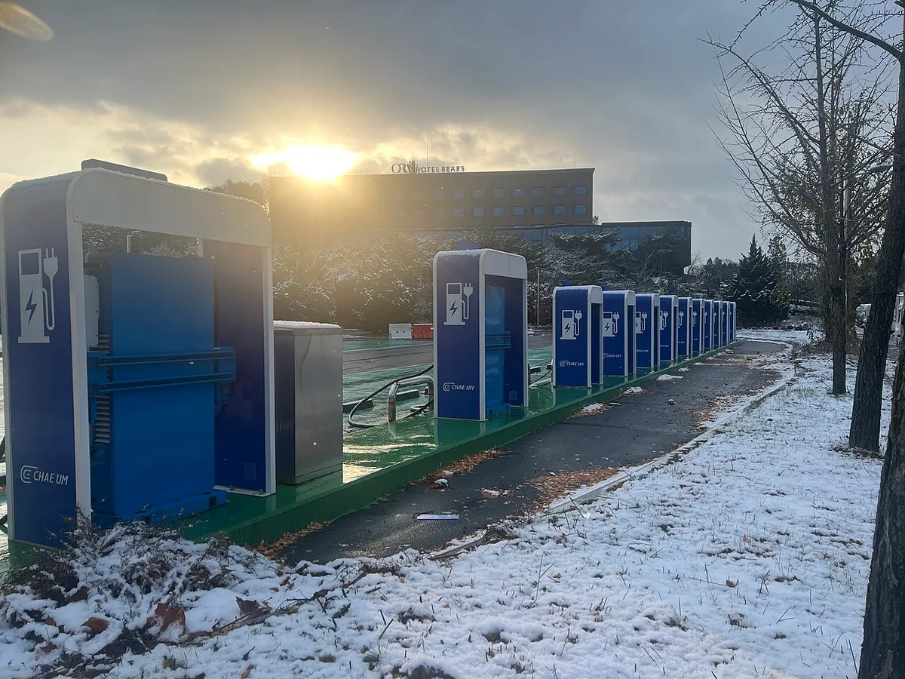
▲ 눈 내린 야외 충전소. 겨울에는 전비가 떨어져 같은 거리라도 충전량과 충전비가 늘어난다 ⓒ Sharon Hahn Darlin / Wikimedia Commons (CC BY 2.0)
✅ 이 계산이 틀어지는 지점
· 겨울 전비: 한파에는 전비가 떨어져 월 충전량이 늘어난다. 4.5km/kWh 가정은 연평균 근사다.
· 기후환경요금 9원은 한전 공식 요금표 페이지에서 직접 열람하지 못한 값이다. 4분기 동결 보도(파이낸셜뉴스)에서 기후환경요금을 포함한 항목이 모두 유지됐고 연료비조정단가 +5원도 동결됐음을 확인했다. 고지서 기재 단가로 바꿔 계산하면 결과가 약간 달라진다.
· 하계(7~8월) 요금은 누진 구간이 달라 위 표와 다르다.
· 5년 단위 총비용은 니로 EV·하이브리드 5년 유지비 계산을, 장거리 충전 동선은 전기차 장거리 충전 계획을 참고하자.
7. 집+공공 혼합 충전, 어떻게 나누면 가장 쌀까
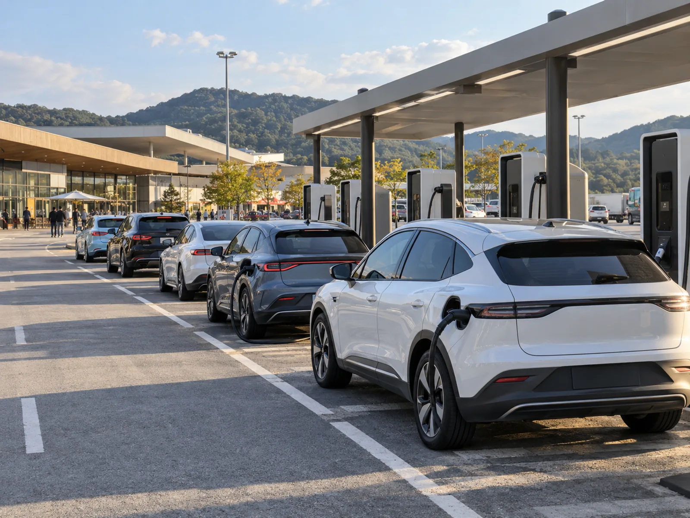
▲ 붐비는 급속충전소를 그린 예시 이미지. 대기 시간이 길수록 집 충전으로 나누는 편이 편하다 ⓒ CarPrism (AI 생성 이미지)
6장에서 집 충전 단가가 월 사용량에 따라 오르내린다는 걸 확인했다. 그렇다면 "집에서 얼마나, 나머지는 공공에서"로 나누는 것이 답이다. 구간별 추가 1kWh당 실질 단가를 먼저 보자(구간 단가 + 기후환경요금 9원 + 연료비조정 5원, 여기에 기금 3.7%와 부가세 10%를 곱한 값 ×1.1407).
| 월 합계 사용량 구간 | 계산식 | 추가 1kWh당 | 공공 완속 295원과 비교 |
|---|---|---|---|
| 1~200kWh | (120+9+5)×1.1407 | 약 153원 | 크게 저렴 |
| 201~400kWh | (214.6+9+5)×1.1407 | 약 261원 | 저렴 |
| 400kWh 초과 | (307.3+9+5)×1.1407 | 약 367원 | 비쌈 (기본요금도 910→1,600→7,300원으로 단계 상승) |
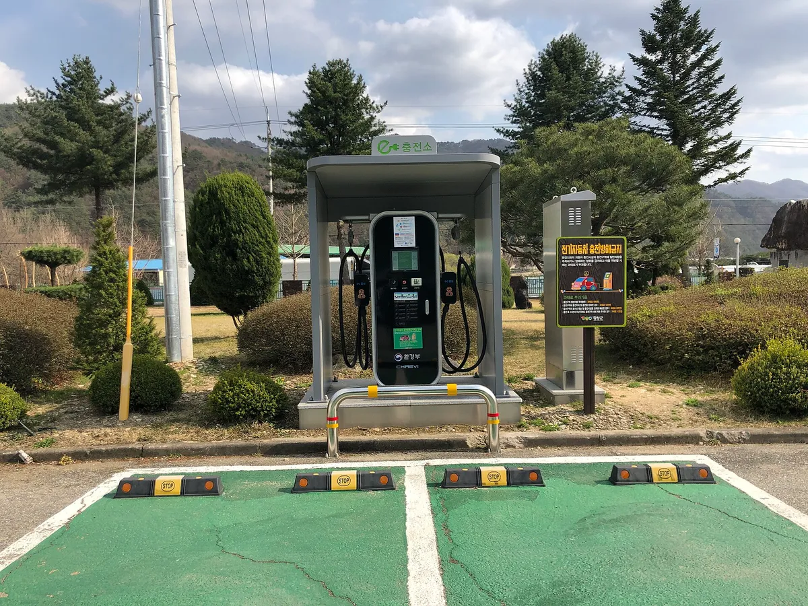
▲ 주차면 앞에 선 지붕형 전기차 충전기. 집과 공공 충전을 나눠 쓰면 월 충전비가 달라진다 (촬영 장소의 사업자와 요금은 사진으로 확정하지 않음) ⓒ Choi Kwang-mo / Wikimedia Commons (CC0)
그래서 최적 조합은 단순하다. 집에서는 월 합계(기존 사용량+충전량)가 400kWh에 닿을 때까지만 충전하고, 넘는 분은 공공 완속에서 충전하는 것이다. 월 1,500km(충전량 약 333kWh)를 모두 집에서 충전하는 경우와 비교하면 아래와 같다. 나머지 충전분은 공공 완속 295원으로 가정했다.
| 기존 월 사용량 | 집 100% | 공공 완속 100% | 최저 조합 (집 충전량) | 최저 월 비용 | 공공 완속 100% 대비 절감 |
|---|---|---|---|---|---|
| 100kWh | 86,540 | 98,235 | 집 300kWh + 공공 33kWh | 77,739 | 20,496 |
| 150kWh | 97,189 | 98,235 | 집 250kWh + 공공 83kWh | 84,871 | 13,364 |
| 250kWh | 112,322 | 98,235 | 집 150kWh + 공공 183kWh | 92,973 | 5,262 |
| 350kWh | 122,862 | 98,235 | 집 50kWh + 공공 283kWh | 96,481 | 1,754 |
| 450kWh | 121,651 | 98,235 | 공공 완속만 | 98,235 | 0 |
✅ 계산 방식과 한계
· 월 전기요금 = (기본요금 + 구간별 전력량요금 + 기후환경요금 9원×kWh + 연료비조정 5원×kWh)에 기금 3.7%와 부가세 10%를 더한 값. 충전으로 늘어난 요금은 "(기존+충전) 청구액 − 기존 청구액"이다. 6장 표와 같은 모델이며 node로 재계산해 일치를 확인했다.
· 충전량을 집과 공공으로 마음대로 나눌 수 있다는 이상적 가정이다. 현실에서 퇴근 후 집 충전 위주라면 위 표의 "집 100%" 열에 가깝다.
· 충전량이 222~667kWh로 달라져도 총 충전량이 최적 집 충전량보다 크면 절감액은 같다(예: 기존 250kWh 가구는 어느 경우나 월 5,262원 절감). 총 충전량이 작으면(222kWh, 기존 100kWh) 전부 집에서 충전하는 편이 더 싸다.
· 하계(7~8월) 누진 구간은 달라 이 표를 그대로 쓸 수 없다.
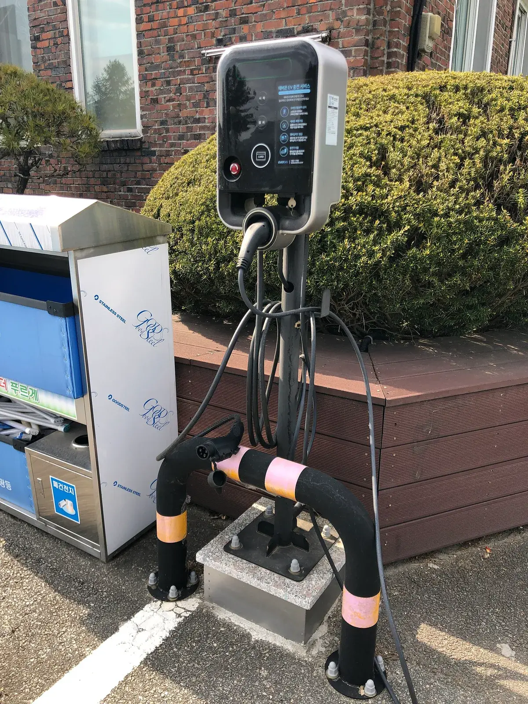
▲ 스탠드형 완속 충전기. 집 충전이 비싸지는 가구에는 이런 공공·단지 완속이 대안이 된다 (사업자는 사진으로 확정하지 않음) ⓒ Choi Kwang-mo / Wikimedia Commons (CC0)
이제 집 충전이 불가능한 운전자(공용 충전기를 쓰는 아파트 거주자 등)가 급속을 얼마나 섞느냐에 따라 최저 요금제가 어떻게 바뀌는지 보자. 월 1,500km(약 333kWh) 기준, 급속분은 환경부 348.4원·SK 비구독 391원·SK 구독 중 고르고 나머지는 공공 완속 295원으로 계산했다. 구독 약정 초과분은 391원 가정이다.
| 급속 비중 | 급속 kWh | 환경부 348.4원 | 비구독 391원 | 스타터 | 베이직 | 프로 | 마스터 | 최저 |
|---|---|---|---|---|---|---|---|---|
| 20% | 67 | 101,893 | 104,733 | 101,833 | 102,900 | 107,567 | 118,233 | 스타터(환경부와 60원 차이) |
| 40% | 133 | 105,453 | 111,133 | 108,233 | 103,567 | 107,900 | 118,233 | 베이직 |
| 60% | 200 | 109,013 | 117,533 | 114,633 | 108,533 | 108,233 | 118,233 | 프로 |
| 100% | 333 | 116,133 | 130,333 | 127,433 | 121,333 | 111,933 | 118,233 | 프로 |
급속 비중이 20%대면 구독의 실익은 사실상 없다. 환경부 급속에 가까운 곳에서 충전할 수 있다면 구독료 없이 환경부 단가를 쓰는 편이 같거나 낫다. 급속 비중 40~60%에서 베이직·프로가 최저이고, 월 333kWh를 전부 급속으로 충전하는 극단적 경우에도 마스터(118,233원)는 프로(111,933원)보다 비싸다. 마스터가 이기려면 급속 충전량이 월 400kWh 안팎은 되어야 한다(4장 표). 계산식은 "월 합계 = 구독료 + 약정 내 kWh×구독 단가 + 초과 kWh×391원 + 완속 kWh×295원"이다.
8. 휘발유로 환산하면 얼마나 싼가
충전요금을 주행 1km당 비용으로 바꿔 휘발유차와 비교해 보자. EV는 4.5km/kWh 가정(충전기 청구 기준)으로 단가 ÷ 4.5, 휘발유는 L당 가격 ÷ 연비다. 휘발유 가격은 오피넷 9월 넷째 주 전국 평균 1,858원을 반올림한 1,850원/L 가정이고 연비도 가정치로, 실제 가격은 오피넷 등에서 확인하고 내 차 연비를 대입해야 한다.
| 구분 | 단가·가정 | 1km당 | 월 1,500km | 연 18,000km |
|---|---|---|---|---|
| EV 공공 완속 | 295.0원/kWh | 약 66원 | 약 9.8만 원 | 약 118만 원 |
| EV 100~200kW 급속 | 348.4원/kWh | 약 77원 | 약 11.6만 원 | 약 139만 원 |
| EV 200kW 이상 초급속 | 393.1원/kWh | 약 87원 | 약 13.1만 원 | 약 157만 원 |
| 휘발유 (연비 15km/L) | 1,850원/L 가정 | 약 123원 | 약 18.5만 원 | 약 222만 원 |
| 휘발유 (연비 12km/L) | 1,850원/L 가정 | 약 154원 | 약 23.1만 원 | 약 278만 원 |
| 휘발유 (연비 10km/L) | 1,850원/L 가정 | 약 185원 | 약 27.8만 원 | 약 333만 원 |
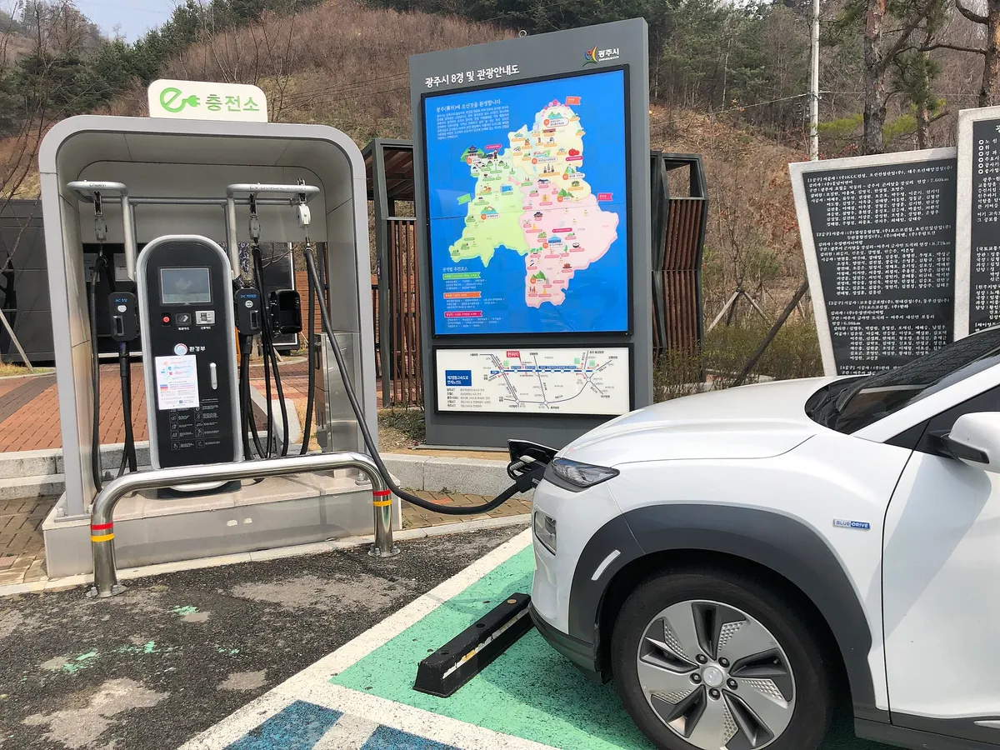
▲ 충전구역에 주차한 전기차와 급속충전기. 가장 비싼 초급속도 1km당 비용은 휘발유보다 낮다 (촬영 장소와 충전기 출력은 사진으로 확정하지 않음) ⓒ Choi Kwang-mo / Wikimedia Commons (CC0)
초급속(87원/km)조차 연비 15km/L 휘발유차(123원/km)보다 낮다. 손익분기는 휘발유 가격 = 87.4원 × 연비로, 연비 15km/L 차는 L당 약 1,310원 이하, 12km/L 차는 약 1,048원 이하일 때만 초급속 EV가 불리해진다. 휘발유 가격은 가정이므로 실제 가격으로 다시 확인하자. 다만 이는 연료비만의 비교다. 차량 가격 차이·보험·감가·겨울철 전비 하락(겨울 전기차 주행거리 감소 비교 참고)은 포함하지 않았다. 5년 총비용은 니로 EV·하이브리드 5년 유지비 계산에서 이어 볼 수 있다.
✅ 충전 전 체크리스트
· 충전기 정격출력(kW) 표시 확인 — 5단계 단가는 이 값으로 정해진다.
· 결제는 환경부 멤버십 카드 vs 사업자 앱 중 어느 쪽이 싼지 비교 — 민간 충전기는 회원가가 따로 있다.
· 주말·공휴일 11~14시(10월 31일까지)면 시작 시각을 11시 이후로 맞춘다.
· 충전 후 바로 이동 — 충전구역에 계속 주차하면 과태료 대상이 될 수 있다.
· 월 합계 400kWh를 넘기는 집이라면 집 충전량을 조절하고 나머지는 공공 완속으로 나눈다.
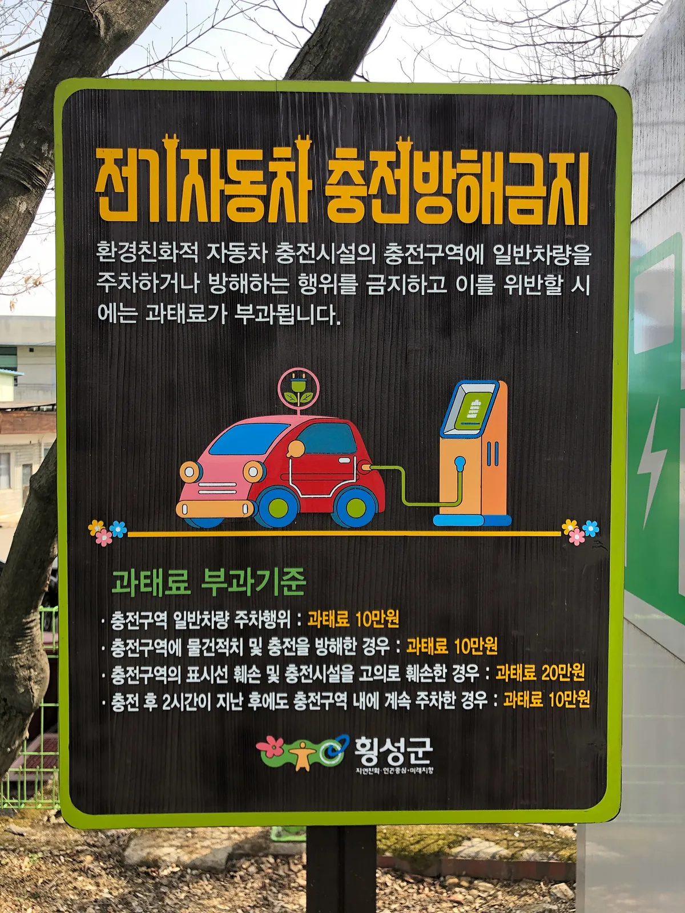
▲ 충전구역 주차 방해에 과태료를 부과한다는 안내판(강원 횡성군). 충전을 끝냈다면 자리를 비우는 것도 요금만큼 중요하다 ⓒ Choikwangmo9 / Wikimedia Commons (CC0)
9. 요약
공공 충전요금은 8월부터 충전기 출력 5단계(295.0~393.1원)로 바뀌었고, 월 1,500km 기준 완속 위주와 초급속 위주의 연간 충전비 격차는 약 39만 원이다. 요금제보다 먼저 볼 것은 충전기 출력(kW)이다.
구독제는 "비구독 391원"과 비교하면 이득이 빨리 나지만, 환경부 100~200kW 급속(348.4원)과 비교하면 SK 마스터는 월 373kWh부터, 프로는 월 184kWh부터 이득이다. 월 급속 충전량 100~300kWh면 베이직·프로, 400kWh 이상이면 마스터가 최저다. 기아 그린패스는 월 요금 ÷ 96원이 손익분기다(정상 회원가 391원은 카프리즘 추정).
집 충전은 월 사용량에 따라 오히려 비쌀 수 있다. 기존 사용량이 250~350kWh인 집은 충전 추가분 단가가 337~369원으로 올라간다(기후환경요금 9원 가정). 전비·기후환경요금·약정 초과 단가 같은 가정이 바뀌면 결과도 바뀌므로, 내 조건을 대입해 확인하자.
집과 공공을 섞는다면 월 합계 400kWh 선이 기준이다. 기존 사용량이 150kWh인 가구가 월 333kWh를 충전하면 집 250kWh+공공 완속 83kWh 조합이 집 100%보다 월 약 1.2만 원 더 싸다. 연료비만 보면 초급속(약 87원/km)도 연비 15km/L 휘발유차(약 123원/km, 가격 가정)보다 낮다.